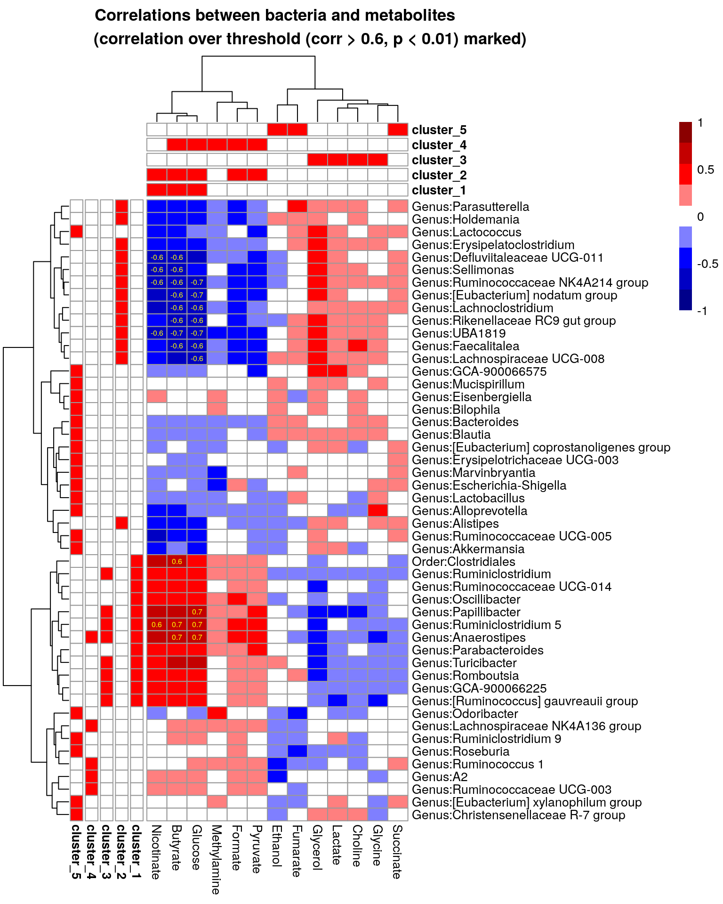

Chapter 7 Unsupervised learning
Unsupervised learning is a part of machine learning where we try to find information from unknown data. It is also called data mining. Usually this means finding of clusters, for instance. Cluster refers to group of samples/features that are similar between each other. For example, based on clinical data we can try to find patient groups that have similar response to used drug.
7.1 Biclustering
Biclustering is a clustering method, which simultaneously clusters rows and columns. In this example, the aim is to find clusters where subset of taxa share similar pattern over subset of metabolites. In our case, we try to find clusters where taxa and metabolites correlate similarly.
Check more from OMA which has dedicated chapter on biclustering.
First, we subset metabolite data so that it includes fewer metabolites. We use coefficient of variation as a subset criteria. Meaning of this is that, if concentration of metabolite does not vary, concentration does not differ between samples.
By doing that, we avoid unnecessary multiple testing, and we focus only on interesting metabolites.
library(ggplot2)
# Threshold: metabolites whose (cv > +threshold or cv < -threshold), will be included
cv_threshold <- 0.5
metabolite_trans <- "nmr"
# Get the data
metabolite_tse <- mae[[2]]
# Calculate coefficient of variation of individual metabolites
df <- data.frame(cv = apply(assay(metabolite_tse, metabolite_trans), 1,
function(x){sd(x)/mean(x)}))
# Plot them as a histogram, and show a line that is used as a threshold
plot <- ggplot(df, aes(x = cv)) +
geom_histogram(bins = 50, color="darkred", fill="lightblue") +
labs(x = "CV", y = "metabolite frequency",
title = "Distribution of coefficient of
variation of log10 concentration of metabolites") +
geom_vline(xintercept = cv_threshold, color = "red") +
geom_text(aes(cv_threshold, 6, label =
paste0("CV threshold (", cv_threshold, ")"), vjust = 2, angle=90)) +
geom_vline(xintercept = -cv_threshold, color = "red") +
geom_text(aes(-cv_threshold, 6, label =
paste0("CV threshold (", -cv_threshold, ")"), vjust = -1, angle=90))
plot
Subsetting metabolomic data:
# Get those metabolites that are over threshold
metabolites_over_th <- rownames(df[df$cv > cv_threshold |
df$cv < -cv_threshold, , drop = FALSE])
# Ignore those metabolites that do not have name / are NA
metabolites_over_th <- metabolites_over_th[!str_detect(metabolites_over_th, "NA")]After that, we subset microbiome data by filtering rarest taxa off-
rank <- "Genus"
prevalence <- 0.2
detection <- 0.001
taxa_trans <- "clr"
# Get bacterial data
taxa_tse <- mae[[1]]
# Agglomerate at Genus level
taxa_tse <- agglomerateByRank(taxa_tse, rank = rank)
# Do CLR transformation
taxa_tse <- transformSamples(taxa_tse, method = "clr", pseudocount = 1)
# Subset metabolite data
metabolite_tse <- metabolite_tse[metabolites_over_th, ]
# Subset bacterial data by its prevalence. Bacteria whose prevalences are over
# threshold are included
taxa_tse <- subsetByPrevalentTaxa(taxa_tse,
prevalence = prevalence,
detection = detection)
# Remove uncultured and ambiguous(as it's hard to interpret their results)
taxa_tse <- taxa_tse[-grep("uncultured|Ambiguous_taxa", names(taxa_tse)),]After subsetting, we can perform cross-correlation analysis. With cross-correlation analysis we can answer the question “If the abundance of this taxon is high, is the concentration of metabolite high?” for instance.
Check OMA book’s dedicated chapther on multi-assay analyses.
library(pheatmap)
# Cross correlate data sets
correlations <- testExperimentCrossCorrelation(taxa_tse, metabolite_tse,
abund_values1 = "clr", abund_values2 = "nmr",
method = "spearman", mode = "matrix")
# For plotting purpose, convert p-values, under 0.05 are marked with "X"
p_threshold <- 0.01
p_values <- ifelse(correlations$p_adj<p_threshold, "X", "")
# Scale colors
breaks <- seq(-ceiling(max(abs(correlations$cor))), ceiling(max(abs(correlations$cor))),
length.out = ifelse( max(abs(correlations$cor))>5,
2*ceiling(max(abs(correlations$cor))), 10 ) )
colors <- colorRampPalette(c("darkblue", "blue", "white",
"red", "darkred"))(length(breaks)-1)
# Create a heatmap
pheatmap(correlations$cor, display_numbers = p_values,
main = paste0("Correlations between bacteria and metabolites
(statistically significant associations (p < 0.05) marked with X)"),
fontsize = 10,
breaks = breaks,
color = colors,
fontsize_number = 10)
Finally, we can find biclusters from cross-correlation data.
# Load package
library(biclust)## Loading required package: MASS##
## Attaching package: 'MASS'## The following object is masked from 'package:dplyr':
##
## select## Loading required package: grid##
## Attaching package: 'grid'## The following object is masked from 'package:Biostrings':
##
## pattern## Loading required package: colorspace## Loading required package: lattice# Find biclusters
bc <- biclust(correlations$cor, method=BCPlaid(), fit.model = y ~ m,
background = TRUE, shuffle = 100, back.fit = 0, max.layers = 10,
iter.startup = 10, iter.layer = 100, verbose = FALSE)
bc##
## An object of class Biclust
##
## call:
## biclust(x = correlations$cor, method = BCPlaid(), fit.model = y ~
## m, background = TRUE, shuffle = 100, back.fit = 0, max.layers = 10,
## iter.startup = 10, iter.layer = 100, verbose = FALSE)
##
## Number of Clusters found: 3
##
## First 3 Cluster sizes:
## BC 1 BC 2 BC 3
## Number of Rows: 12 13 8
## Number of Columns: 3 5 4To get cluster information into right format, we can use functions from OMA book. They add cluster for those features that were not assigned to any cluster.
# Functions for obtaining biclust information
# Get clusters for rows and columns
.get_biclusters_from_biclust <- function(bc, assay){
# Get cluster information for columns and rows
bc_columns <- t(bc@NumberxCol)
bc_columns <- data.frame(bc_columns)
bc_rows <- bc@RowxNumber
bc_rows <- data.frame(bc_rows)
# Get data into right format
bc_columns <- .manipulate_bc_data(bc_columns, assay, "col")
bc_rows <- .manipulate_bc_data(bc_rows, assay, "row")
return(list(bc_columns = bc_columns, bc_rows = bc_rows))
}
# Input clusters, and how many observations there should be, i.e., the number of samples or features
.manipulate_bc_data <- function(bc_clusters, assay, row_col){
# Get right dimension
dim <- ifelse(row_col == "col", ncol(assay), nrow(assay))
# Get column/row names
if( row_col == "col" ){
names <- colnames(assay)
} else{
names <- rownames(assay)
}
# If no clusters were found, create one. Otherwise create additional cluster which
# contain those samples that are not included in clusters that were found.
if( nrow(bc_clusters) != dim ){
bc_clusters <- data.frame(cluster = rep(TRUE, dim))
} else {
# Create additional cluster that includes those samples/features that
# are not included in other clusters.
vec <- ifelse(rowSums(bc_clusters) > 0, FALSE, TRUE)
# If additional cluster contains samples, then add it
if ( any(vec) ){
bc_clusters <- cbind(bc_clusters, vec)
}
}
# Adjust row and column names
rownames(bc_clusters) <- names
colnames(bc_clusters) <- paste0("cluster_", 1:ncol(bc_clusters))
return(bc_clusters)
}Then we can use the functions.
# Get biclusters
bcs <- .get_biclusters_from_biclust(bc, correlations$cor)
bicluster_rows <- bcs$bc_rows
bicluster_columns <- bcs$bc_columns
# Print biclusters for rows
head(bicluster_rows)## cluster_1 cluster_2 cluster_3 cluster_4
## Genus:Escherichia-Shigella FALSE FALSE FALSE TRUE
## Genus:Ruminiclostridium 5 TRUE FALSE TRUE FALSE
## Genus:Lactobacillus FALSE FALSE FALSE TRUE
## Genus:Ruminococcaceae UCG-014 TRUE FALSE FALSE FALSE
## Genus:Lactococcus FALSE FALSE FALSE TRUE
## Genus:Mucispirillum FALSE FALSE FALSE TRUENow, we can add bicluster information into the heatmap that we already made.
# Convert boolean values into factors
bicluster_columns <- data.frame(apply(bicluster_columns, 2, as.factor))
bicluster_rows <- data.frame(apply(bicluster_rows, 2, as.factor))
# Adjust colors for all clusters
if( ncol(bicluster_rows) > ncol(bicluster_columns) ){
cluster_names <- colnames(bicluster_rows)
} else {
cluster_names <- colnames(bicluster_columns)
}
annotation_colors <- list()
for(name in cluster_names){
annotation_colors[[name]] <- c("TRUE" = "red", "FALSE" = "white")
}
# Get correlation values that are over thresholds
p_threshold <- 0.01
corr_threshold <- 0.6
corr_values <- ifelse(correlations$p_adj<p_threshold &
abs(correlations$cor)>corr_threshold , round(correlations$cor,1), "")
# Create a heatmap
pheatmap(correlations$cor,
annotation_col = bicluster_columns,
annotation_row = bicluster_rows,
annotation_colors = annotation_colors,
display_numbers = corr_values,
main = paste0("Correlations between bacteria and metabolites
(correlation over threshold (corr > ", corr_threshold,
", p < ", p_threshold,") marked)"),
fontsize = 10,
breaks = breaks,
color = colors,
fontsize_number = 6,
number_color = "yellow",
annotation_legend = FALSE)